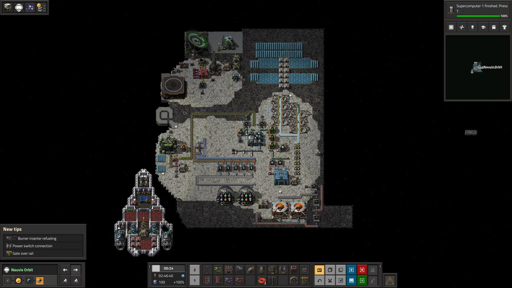
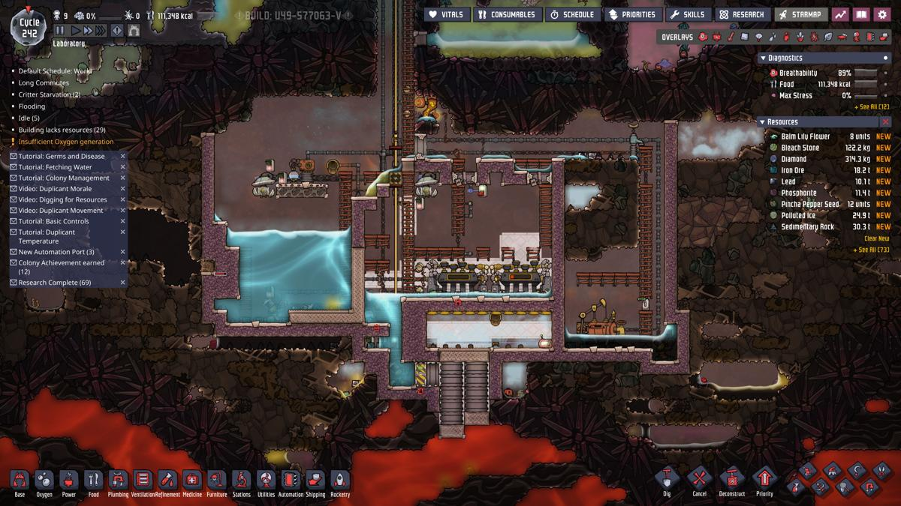
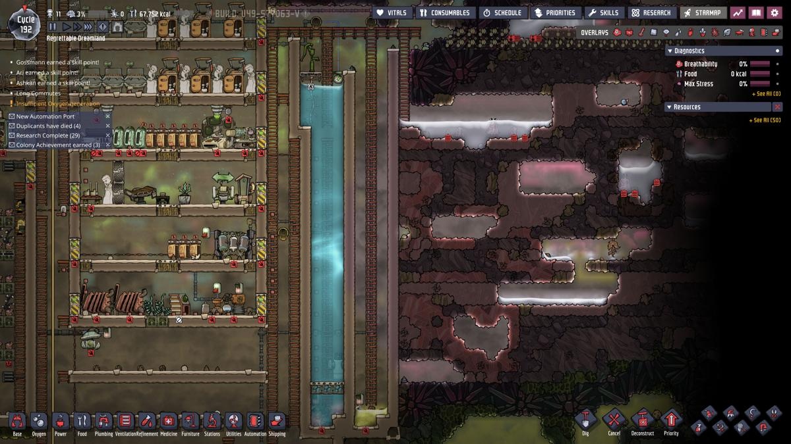

Lessons learned from games
I don’t play games that much. Usually, just something more or less random, typically once or twice a year. I get caught up in interesting mechanics, later learn how to exploit specifics, or see the repetition everywhere, and then I get bored.
I was always a bit suspicious when people told me that they learned a lot of things from games. But I’ve decided to treat this as an experiment, and see whether there are lessons that can be learned from games. Ideally, lessons applicable to my work as a programmer.
I wrote this by looking back at games I've returned to during the last two years and asking what, if anything, they actually taught me. This will be updated if I play something worth adding.
Your ship crashed on an unknown planet. In the vanilla game, your goal is to build the industrial pipeline to get you back into space.
You need to mine resources, process them, and build factories, pipelines, and factories for building factories. You do this by linking factories with transportation belts and robots that feed them.
There are countless lessons about queues. It will teach you to intuitively understand the differences between latency and throughput. How quickly you can get the product somewhere, versus how much product you can get there. It is really interesting how many programmers I work with get this wrong, even though they understand it when it comes to networks.
But there is so much more to learn from this:
Some of the lessons are on the topic of expansion. You have only 2D space available, and you need to learn how to use it effectively, so you can expand production of resources when needed. That’s hard if you don’t think about it right from the beginning. In the ideal case, you can expand without the need to redo pieces of your factory. So this forces you to think about the factory you are creating as kind of a seed, that needs to grow, which means that you need to plan the growth from the beginning.
I love this quote from Joscha Bach:
You need to implement something that is growing into the right shape. In the same way that if you want a tree, you cannot just go into nature and build a tree. You need to build something that wants to grow into a tree. You need something like a seedling.Initially it might be just a single cell that creates a group of cells, which then interact in such a way that they form a seedling that ultimately becomes a tree.
Everything in the universe is basically a higher-order design that requires multiple levels of genesis before it turns into the shape that realizes the function you are eventually observing.
There are architecture lessons. How to build factory blocks. How to build the main bus and what you actually want to put there. Some products are expensive, and it may be better to make them in a central place (i.e., bring ore to giant smelteries); some you can manufacture locally from basic ingredients when you require them (coil from copper).
If your main bus gets too big, latency grows, resources required to build just the bus itself increase, and it gets harder and harder to expand. Moreover, countless products are constantly piled up just waiting in the bus lines, which is bad for super expensive products.
I realized how much this game actually improved my thinking about parallel systems when I was working on one specific service that processed data using many queues; there were multiple workers, some of them massively parallel (600+ processes), with inter-process queues. We had design discussions, and at one point, I wanted to just launch Factorio and use it to explain design decisions to my colleagues: “Look, this is why this has to be like that; otherwise, the latency will do this ..” This happens all the time.
A lot of the stuff you can learn here is unintuitive by default, and even the senior developers I work with had a hard time getting it without extended explanation.
I keep running into situations where people don't understand fundamental concepts that Factorio teaches intuitively. During COVID, we saw how many people struggled with exponential curves. What I noticed in my own family was that most people didn't understand they should be reading the area under the graph rather than just the current number when looking at daily case increments. This included my sister, who has a degree from LSE (London School of Economics), where I would have expected them to teach graph reading. She would say things like, "But the graph has been showing only a few hundred cases per day for a month now; that's fine."
But it goes beyond exponentials. Most people don't understand the difference between throughput and latency and how these relate to concepts like "speed" - and this includes programmers. Factorio helps immensely with teaching this intuition. And now I'm encountering yet another thing people don't grasp that Factorio would teach them: averages and their changes over time.
For example, I was working with a colleague on a service that uploads files to an S3 bucket with a policy that automatically deletes files after 180 days. We adjusted the settings so fewer files would be uploaded than before. Suddenly, there was a drop in the graph showing the total number of files, and my colleague was completely confused by this drop. What threw him off the most was that he was looking at just a 3-day window where the drop appeared to be about 90%, instead of looking at the full 180-day window where the drop was minimal. This would be so simple to explain using assemblers and belts, where you can directly see the “messages” travel on the belt and see the effects immediately and intuitively.
There have been many, many such cases where I wanted to launch Factorio and play with my colleagues for a few days instead of explaining stuff again and again with just words.
People get confused all the time when there is some service producing X things per unit of time, and some other thing consuming from it. They get quickly lost, if there are additional policies, like that the files are deleted in some time unless they are processed. And when you start connecting multiple of these microservices together, almost everyone I know gets lost. You know who doesn’t get lost? People who play factorio.

Edit: Okay, and the Space Age expansion is now pretty much this + more.
Production line
In Production line, you make cars. In some ways, it is quite similar to Factorio, but you have more dimensions that you need to optimize, and you also don’t need to manufacture everything.
There are, of course, similar kinds of problems and lessons you learn from the optimization of pipelines. Queues, throughput, latency, delivery of the subcomponents, stockpiles, and their optimization.
In some ways, it’s much easier than Factorio. In some ways, it’s much harder, especially because it forces you to think about costs. The factory you rent costs money. Everything you use costs money. You don’t just need to manufacture cars but also sell them.
At the beginning, you need to take a loan to even start building things. And loans have interest, which will eat you alive if you don’t check them.
And there are other difficulties. To use something, you need to first research it, then buy machines that will manufacture it, and then install it into the products you make. All this while you are trying to balance manufacturing, sales, expenses, profits, and, in some gameplay modes, also time challenges.
What I liked about this is that it forces you to think about money. Not just “how much does this component or machine cost?” but also about how much money you’ll lose during the refactoring of the factory. How much money can you make with the change, or how much can you save? What will the development and debugging process cost you? Can you afford it? What happens if you do it later? Can you replace it with something cheaper, which will have 80% of the functionality? Are you really sure that it will have the expected effect? Can you benchmark it first? How do you actually do this kind of analysis?
This has direct parallels with real-world engineering, especially if you are a programmer. A lot of what I did in my job during the last year was exactly about this, asking these questions all the time.
How much will we save if we implement this change? How much will we lose compared to not implementing something else? What if it fails completely or doesn’t have the desired effect?
Oxygen Not Included
Oxygen Not Included is the “colony simulator” kind of game, like Dwarf Fortress or RimWorld. You have a bunch of workers (duplicants, or dupes), you see the map from the side, and you express your wishes. Duplicants then go and implement them when they feel like it.
At the beginning, your dupes are teleported into the heart of the asteroid. Sporadically, there is an option to get more dupes or item from the teleport.
In my opinion, it has a kind of ugly graphic style, but you quickly get used to it. Like other colony simulators, you have many overlays for all kinds of things, from electricity to gas flow. Like other colony games, it simulates physics, for many different things. Fluids, gasses, gravity, heat and some other things.
Unlike in other games, there is no conflict. You just build your base. It sounds easy, but, as you may have guessed, it isn’t.
You need to provide your dupes with the things they need. Most importantly, air, water, and heat. Since everything is consumable, this forces you to mine the resources and build technology to convert them into useful things. But at the same time, the asteroid is a closed system. Resources generally do not disappear; they transform into different things.
One of the first lessons I’ve learned in this game is that you need to think about the consequences of everything you do. Several times, I have died in cycle 50 for some decision I made in cycle 5.
What may happen, for example, is that you build enough technology that heat dissipation becomes a problem, and your whole base cooks itself off before you are able to get some kind of heat transfer (closed system, remember). Or you run out of electricity and are unable to make oxygen.

Maybe you build beds too low; CO₂, which weighs more than O₂, falls down, your dupes can’t breathe, and are suffocating. They wake up and run upstairs to breathe, which leads to them not being happy and not getting enough sleep. Some of them start vomiting, and some of them start getting crazy and destroy stuff. Some of them get sick because now there are germs from all the vomit (it flows down ..). You start cleaning it and disinfecting everything, which means that they don’t do other jobs, and suddenly, everyone dies because there is no food.
In general, you need to optimize in multiple dimensions all the time. If you have some decision, you need to think about it from the gas flow point of view, fluid, electricity, germs, decoration, and all other points of view in overlays. All 12 overlays represent one dimension, and all of them are important. And on top of this, you are thinking about your dupes’ happiness, hunger, all the equipment, whether there are enough toilets for them, and what you do with waste. Only then can you think about the architecture of your base.
The game is a chaotic system where small decisions may propagate into stuff that will later kill you.
One of the first things I've learned while playing Oxygen Not Included was that iterative development wins over big projects. Basically, optimization in the temporal dimension, on top of all other dimensions.
Having something small but functional immediately is far more valuable than waiting many turns for a large project to complete. Not only can you start using it right away and improve it iteratively as new requirements emerge, but big projects tend to tie up significant resources and workers for extended periods. This can quickly bankrupt or destroy your run and prevent you from working on other things you need.

It may sound obvious, and I've known about these things before. What the game gave me was a better sense of what actually is a big and small project. Only when I really ran into these problems did I learn to appreciate quick iterative development and the value of a minimal viable product.
This game directly changed the way I write software, and I used the lessons learned to judge projects at work. For example, to insist that we first do a prototype and grow it into full service later, instead of committing to deliver a big project which will take a lot of time and will need to be perfect right from the beginning.
Noita
Noita. I still don’t really know how to talk about this game.
On the surface, it looks like this charming 2D shooter platform game. You move your mysterious character in the middle of the screen. You have magic wands, which you can use to shoot at enemies, and also various potions. The whole world is interactive, and destructible, with physical simulations on many layers.
The game is insanely hard. You die, you start again. No respawns, no saves. At the beginning, you appear in front of the Holy mountain and your first dungeon. You go in, kill all the enemies, and get to the harder and harder levels. After each level, you get a health restore and a new perk, and you can buy some spells or wands.
The first interesting part is when you actually notice that you can craft your wands. Put different spells into them, combine them, effectively creating small programs. You can get absurdly powerful wands this way. Wands that can literally make you unbeatable or teleport you into parallel worlds. The mechanics are based on axiomatic principles, and the community is still discovering new wands and mechanics you can use.
If you are really, really persistent or learn how to cheat by quitting the game and copying the save folder, you may even get to the end. You beat the alchemist’s creations, complete the Work, and get all the gold in the world.
In fact, you’ll see the end credits and may even think you’ve beaten the game. But then you may try again and this time decide not to go in the Holy Mountain right at the start but look around.
You’ll find out that the game you’ve just beaten is maybe 10% of the world map (in the middle). That the world is insanely bigger, and in fact, super, super hard, and you can literally do all kinds of stuff you wouldn’t dream of. Like, find the sun and the moon and make a black hole from them.
The world is full of secrets and interesting mechanics that arise from the axiomatic principles on which the game is built upon.
The reason I spent 176 hours playing it is that I could see some more profound meaning hidden in the game, sprinkled in its many secrets. You are tracing the steps of a previous Alchemist, trying to learn the secrets of the world. There are many parallels with autodidactism and actual alchemists.
The biggest lesson I took from Noita is that things may be insanely hard, but if you persist and obtain enough knowledge, you may become a master of your craft.
It may sound stupid, like some HR LinkedIn phrase, but it actually is something I’ve learned by playing.
Darktide
W40k FPS cooperative multiplayer game. Simple “kill all” missions, where you go with three random strangers and try to survive.
The highest difficulty Auric missions are pure insanity:
The gameplay itself, the story, and the mechanics are not that interesting, and there are a lot of problems with the game, most notably the lack of content.
What is captivating is that the game is quite hard on the higher difficulties. And you play with three other random strangers. How can four strangers who met for the first time two minutes ago cooperate and survive?
There is one very enjoyable winning strategy, which makes me return to the game;
Put others before yourself.
Don’t go alone, or everyone will die, usually quickly. Before you take health or ammo or any other resource, think about whether someone else may need it more. Even more, ping it to others. Think about how your specific role (ogryn - tank, veteran - long range, psyker - high damage to groups or specific targets, zealot - high damage in melee weapons) can benefit the others, and play accordingly with that in mind. Look at what others do, and support them. Your psyker is swarmed with enemies? Go and protect him, even at the cost of dying yourself.
This may seem boring, but it makes all the difference. Because if everyone in the group does this, the whole team is incredibly effective, the mission is a joy, and you feel great. It feels addictive. Not the game itself, but the team cooperation, where everyone supports each other.
The lesson is; if you have a team where everyone is trying their best to support others, everyone is productive and usually happy.
In some ways, it reminds me of the Law of Jante, although not that harsh.
Honorable mentions
While I loved these, they basically are directly about programming, and as such, the lessons learned are obvious:

{kind=link}
{kind=link}
{kind=link}
{kind=link}
{kind=link}
{kind=link}
{kind=link}
{kind=link}
{kind=link}
{kind=link}
{kind=link}
{kind=link}
{kind=link}
{kind=link}
{kind=link}